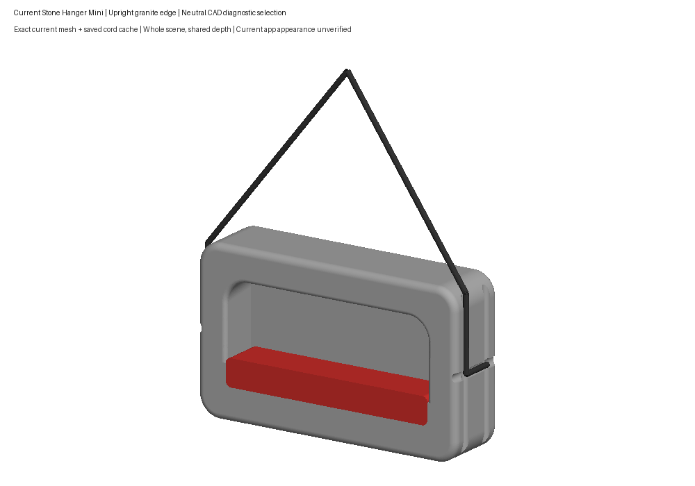
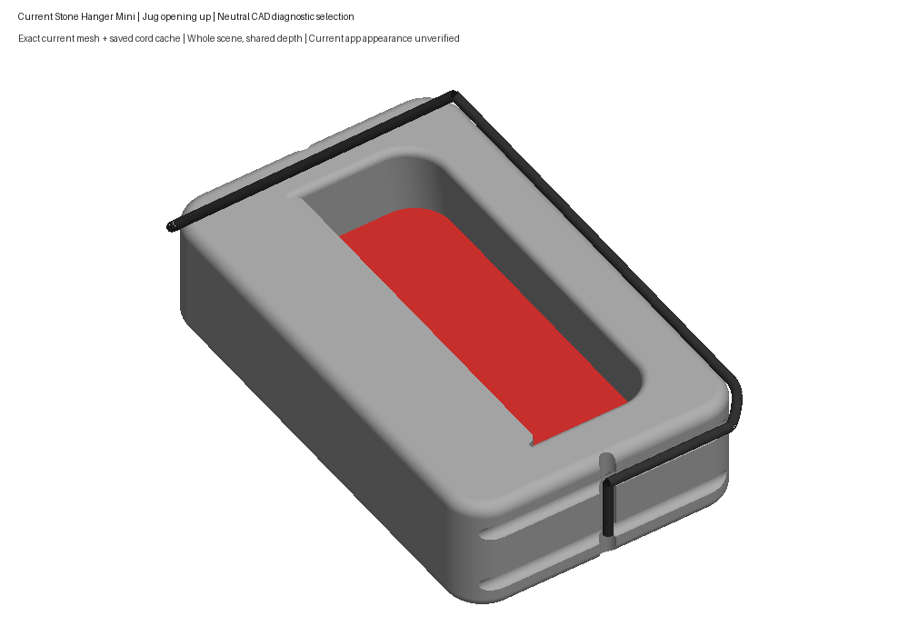
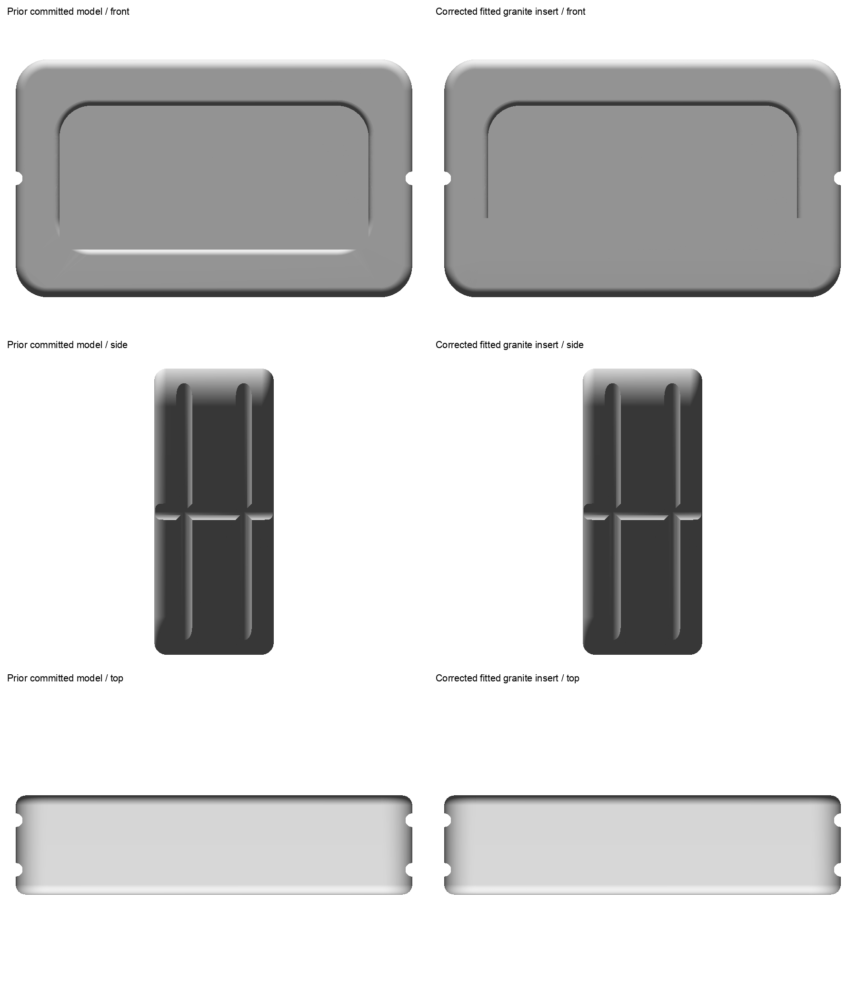
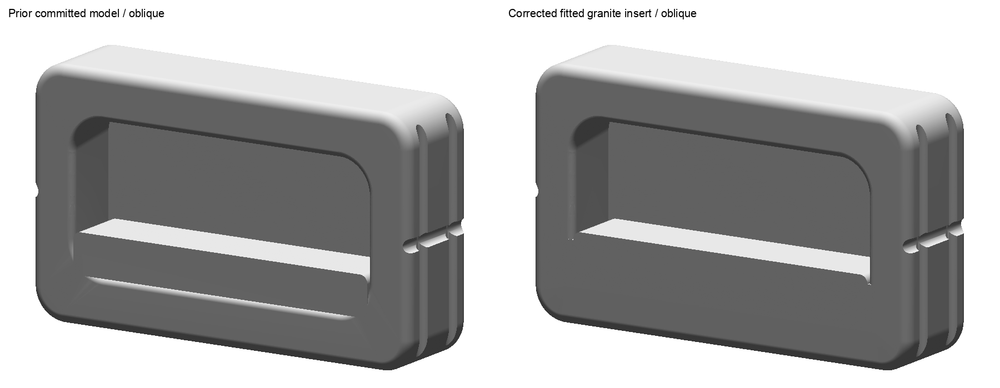

The user rejected the cords and recessed-wall jug selection. The confirmed jug is the rounded outside top/back rail. These unchanged raw views document that rejection; the correction is in progress.
Full record · Human feedback · Exact old identities




These are CAD previews. Current app appearance and interaction remain unverified.